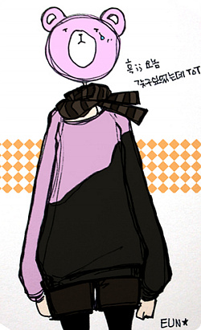

이번에 동생곰이 제대하면서 공부시작하기전에16일부터 유럽돌고(부..부럽;ㅂ;) 2월말에 나랑 런던서 만나서 한 일주일 정도 딩가딩가 할예정^^**
엄마님께 전화로 "아들 제대해서 좋겠네용~"
라구했더니
엄마님 : "........빨래거리가 늘어서 싫다....." 라고 하셨다;;;;
여튼 나능 스무살 이후의 내 삶의 80% 이상이 딴나라서 박스에 둘러싸인(...;;)
최저가 생활을 하고있는지라;;
(것도 이상하게 자꾸 기숙사에 살게된다;; 진짜 이것도 나중에 썰풀거 한보따리;;
기숙사에서 온갖 이상한 싸이코들은 다 만나본듯;;;;)
어쩌다보니 동생곰이랑은 일년에 한두번 보는상황이 되었음;;
2007년초부터 잠깐 한국서 한 1년6개월정도 생활했을때는
동생이군대를 갔음;;; 정말 뭐지 이건^^;;;
여튼 기회다 싶어서
이것저것 마구마구 '이거이거이거 가꾸와!!!' 리스트를 작성하고있는데;;
전부터 눈여겨봐놨던 4EVAMALL 상의 몇개를 주문할려고 홈페이지 들어가보니
이미 봄신상으로 페이지가 다 바뀌어있었다;;;어헝헝;ㅂ;
죠기 위에 아쉬운마음에 그림으로 그려본;; 저 비대칭 원피스?? 긴상의?? ;ㅂ;
근데 진짜 나는 인터넷주문하지말라는 신의계시인가;;
주위사람에게 마이너스의손이라 불리우는
거의 신기에 가까운 불량품 뽑기능력;;;
CD나DVD를 주문하면 케이스가 깨져오거나 DVD가 안들어있는 빈껍데기만 오거나
그것도 아니면 멀쩡한 DVD가 재생이 안되거나;;
전자기기를 주문하면 꼭 불량품이오고;;
책을 주문하면 이건 그나마 빈도수가 젤 낮긴하지만;;
가끔 페이지가 뒤집어진 파본이 오거나
잡지부록이 탐나서 잡지를 주문하면 부록이 안딸려오고 잡지만 배달된다거나;;
옷을 인터넷에서 주문할때는 한꺼번에 와장창 사는편이었는데(과거형;;)
그럼 꼭 한벌이상 내가주문하지 않은 이상한게 들어있다거나
아님 주문한 옷이 죄다 막상 입어보니 실패라거나;;;
해서;;; 이제 온라인상으로 옷구입하는건 거의 마음을 접고있었는데
저 쇼핑몰은 왠지 디자이너샵이란게 밑도끝도없는 신용도 상승에
무엇보다 디자인이 마음에 들었단 말이지;ㅂ;
그러고보니 저 쇼핑몰에서 옷을 구입한 적은 한번도 없지만;;
알게된건 꽤 오래전인데
그때도 정말 마음에 드는자켓이 있어서 링크만 걸어놓고 고민하다가
(자켓이 디자인은 정말 특이하고 마음에 드는데 내가 저걸 과연 입을까? - 종류였음^^;;;)
에잇!!! 지르고 후회하자(←;;) 모드로 결제할려구 재방문해보면
그 디자이너가 리스트에서 빠져있었다;;;;(조안스미스였나;; 암튼 지금도 아쉬운 자켓중하나;ㅂ;)
에이........아숩네.......쩝쩝